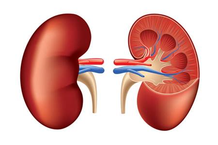

Just like in people, your dog's kidneys are highly sophisticated filters - removing waste substances and unnecessary water from the blood and eliminating from the body in the form of urine. These waste products include urea (a compound that forms when proteins are broken down), phosphorus and salt and when the kidneys aren't working properly, they can begin to build up in the system to dangerous levels. Kidney disease describes any condition that causes this decline in kidney function and the symptoms it causes. It is actually surprisingly common, especially in older dogs, of whom one in ten will sadly develop the condition at some point [1].
Acute vs Chronic
Kidney problems are generally described as being either acute and chronic.
Chronic kidney disease (CKD) is a slow decline in kidney function over a course months or years which can make it difficult to spot. Its causes can also be hard to identify although the condition is often related to an underlying illness. Chronic kidney disease is much more prevalent in older dogs and is more common in some breeds and lines suggesting a hereditary element.
Acute kidney failure, on the other hand, is a sudden collapse of kidney function that occurs over a matter of days, usually as a result of ingesting poisonous substances (for example antifreeze, contaminated foods, certain medications, etc.), infections or urinary obstruction.
Naturally, the treatment of the two forms of kidney disease are quite different. For the acute form emergency medical treatment is often required to eliminate the cause and get the dog back to recovery as fast as possible. Tackling the chronic form, however, is a much longer battle and often relies heavily on dietary management. In the rest of this article, we're talking only about the management of CHRONIC KIDNEY DISEASE.
Symptoms
While, as we mentioned, chronic kidney disease is often associated with underlying health problems which may present their own symptoms, the most common signs of the condition include:

A change in water consumption
A change in the volume of urine produced
Depression and listlessness
Decreased or loss of appetite
Unusual (often described as chemical) breath odour
Vomiting
Weight loss (particularly muscle loss)
Blood in urine
If you suspect your dog is suffering from kidney problems, it is very important that you first seek the advice of your vet in order to confirm the diagnosis and ensure that all necessary medical steps are taken before moving on to the dietary measures suggested below.
Dietary management and prevention
Chronic kidney disease is one of those conditions where diet alone can have a huge effect. Studies have shown that getting the right balance of nutrients can significantly slow the progression of the disease, reduce or prevent flare-ups and can increase the length and quality of life of pets with renal problems [2,3].
The main aim of the dietary management of CKD is to tackle the most detrimental effects of the disease. This generally involves...
Countering the build up of waste substances in the bloodstream by reducing their intake - particularly phosphorus, protein and sodium
Slowing or reversing weight loss with a particular focus on retaining muscle condition
So what are the options?
Option 1: Prescription diets
There are plenty of prescription diets out there specifically designed to manage chronic kidney disease and for many dogs they undeniably work well. They do tend to be extremely overpriced and the ingredients generally aren't great, but the specific balance of nutrients is exactly what most dogs with CKD (especially later stage) need so, in this case, they may well be the best choice for a lot of dogs. Ask your vet for more info on prescription renal diets.
Option 2: Over-the-counter dog foods
Prescription diets are, however, not the only foods that are suitable for managing chronic kidney disease, especially in the early to middle stages. Many over-the-counter foods fulfil essentially the same nutritional criteria as prescription diets and can be used to effectively manage the condition at a fraction of the price. Below is a list of the most important factors to look for in a food for dogs with CKD.
Please note that these guidelines are meant for adult maintenance only, not for puppies or females who are pregnant or nursing, as their requirements will be quite different. Also, if your vet has identified any other underlying health problems, they will need to taken into account when assessing the best diet for your dog.
Phosphorus
Studies have shown that phosphorus restriction is the most critical nutritional modification for dogs with CKD[4] and alone can slow the progression of the disease considerably. Since meats contain relatively high levels of phosphorous, this is one of the rare instances where high meat diets are probably not the best solution. Unfortunately not all pet food manufacturers openly declare their phosphorous levels so you may need to contact the manufacturer directly. Look for a food with between 0.2% and 0.8% phosphorus on a dry matter basis (find a guide to dry matter calculations here).
Protein
The best approach to protein for CKD dogs, on the other hand, is far less clear cut. Traditionally it has always been thought that a very low protein diet is best as it reduces the amount of urea being produced and accumulating in the blood stream and while this can certainly be beneficial, especially in the later stages of the disease, protein restriction is also likely to accelerate muscle loss and have a considerable negative impact on quality of life.
Nowadays, most nutritionists favour a middle road - low to moderate protein levels with an emphasis on protein quality as the easier it is to digest and utilise, the better it will help to combat muscle loss.
Meat
Which brings us to our second quandary - meat. As mentioned above, you typically want to keep meat intake low in CKD dogs as it contains a relatively high amount of phosphorus, which is bad. But, at the same time, meat is certainly the best source of easily digested and utilised proteins, which are good.
So you have two options: The first, and the one taken by the manufacturers of prescription diets, is to largely forgo meat proteins in favour of proteins derived from vegetable sources like maize, peas, soya etc. As vegetables contain much less phosphorus, this approach tackles the phosphorus question admirably but since vegetable proteins are certainly less suitable for dogs than their meat counterparts, it may not necessarily be the best solution for maintaining muscle condition.
The second option is to feed a moderate amount of good quality meat, thus ensuring a good supply of high quality protein to promote muscle condition but unfortunately failing to reduce the phosphorus level as much as possible.
Which option is best will really depend on your individual dog. For example, if your dog doesn't have elevated blood phosphorous levels (your vet will be able to tell you if this is the case) but is experiencing reduced muscle condition and weight loss, the second option would probably be best, while if weight loss isn't a problem, the first approach would likely be better.
Salt
While all dogs need some salt in their diet, too much can be problematic and this is especially true for dogs with kidney problems. The kidneys are responsible for removing excess salt from the bloodstream but when their function is reduced, additional salt can quickly build up in the blood stream to dangerous levels. Be sure to steer clear of any foods or treats with high levels of salt/sodium or added salt.
Palatability:
Obviously, the best food in the world is only good if your dog eats it and coupled with a reduced appetite, an unpalatable diet can be very detrimental for a CKD dog. Look for a food that ticks the above boxes AND that your dog finds appetising. Most pet food companies offer free or low-price samples so be sure to try before you buy.
To summarise, you're looking for a food that is...
The button above will take you to a list of foods that tick these boxes but the list is not exhaustive so you may also want to ask your favourite dog food manufacturers if they have something that would also fit the bill.
Option 3: Home-preparing food
A suitable home prepared diet, be it cooked or raw, can work wonders for dogs with early to mid-stage kidney disease but careful planning is crucial. The points above are a good place to start but to fully cover recipe formulation for CKD dogs is, frankly, an article in itself which will have to go on to the to-do list for now. In the meantime, though, this page provides a fairly comprehensive guide on the subject.
Other important considerations
Water: Water intake is very important for dogs with kidney problems as without sufficient water, filtration of the blood becomes much harder. For this reason it is especially important to ensure fresh, clean water is available at all times (this really goes for all dogs). Some vets also recommend sticking to wet foods as they inherently contain much higher amounts of moisture or, alternatively, dry foods can be soaked in water before feeding.
Treats, leftovers and tidbits: Treats and tidbits are fine for dogs with kidney disease as long as they 1. fit all of the above criteria as well and 2. are weighed into the dog's daily feeding amount to avoid over-feeding.
Change diets slowly: Whatever food you decide to go with, be sure to introduce it gradually (over the course of at least a week) to give the system plenty of time to adjust and to make it easier for you to spot and rectify any potential issues early on. You can find our guide to changing diets here.
Avoid overfeeding: When you see your dog losing weight, it seems natural to increase the amount of food your giving but if your dog is experiencing digestive issues, this could cause a lot more problems than it solves. Our Dog Feeding Guide has sections on how much to feed and also on how to deal with digestive upsets.
Supplements
While there are a whole host of health supplements that are marketed for kidney health, the two below have the greatest weight of evidence behind them. They are already added to some foods (particularly prescription renal diets) or you can add your own.
Omega 3 oils not only help to strengthen renal function but have all sorts of other health benefits for all dogs. Fish body oils are certainly the best source and are often found already added to many pet foods or can be added as a supplement (roughly 150 mg per 5kg is recommended). As an added bonus, liquid fish oils may also enhance palatability.
Carnitine is sometimes recommended as a supplement for helping to combat loss in muscle quality as it increases the use of fat as an energy source, leaving the protein in the diet to be used for repairing and building muscle.
Your experiences
If your dog has suffered with kidney disease, we would love to hear from you either in the comments section below or on the forum. What worked and what didn't? How would you do things differently in the future? Please do let us know as your tips could make all the difference to other dog owners out there.
References
Brown SA. Renal dysfunction in small animals. The Merck Veterinary Manual website. Accessed October 2018. Link
Ross SJ, Osborne CA, Kirk CA, et al. Clinical evaluation of dietary modification for treatment of spontaneous chronic kidney disease in cats. J Am Vet Med Assoc 2006; 229: 949-957. Link
Jacob F, Polzin DJ, Osborne CA, et al. Clinical evaluation of dietary modification for treatment of spontaneous chronic renal failure in dogs. J Am Vet Med Assoc 2002; 220: 1163-1170. Link
Cortadellas O, Fernandez del Palacio MJ, Talavera J, et al. Calcium and phosphorus homeostasis in dogs with spontaneous chronic kidney disease at different stages of severity. J Vet Intern Med 2010; 24: 73-79. Link